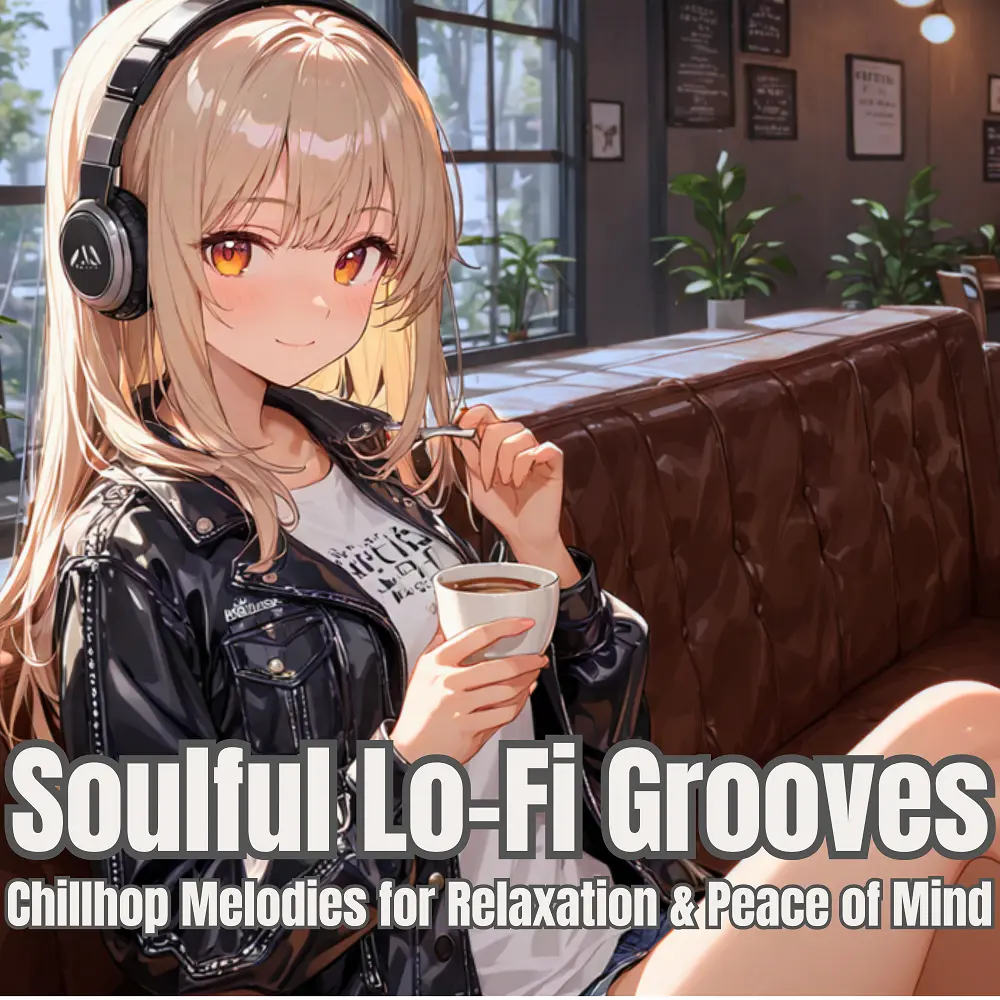

Lo-Fi
Soulful Lo-Fi Grooves
Nanashino-chan
Explore Soulful Lo-Fi Grooves by Nanashino-chan: 30 instrumental tracks spanning Lo-Fi. Start with Soulful Beginnings / Mellow Flow, preview the collection and find your favorites on streaming services.
2025-06-02 · Released · 30 tracks · Instrumental
Preview the album
The jacket stays here until you choose a track. Playback uses YouTube.
YOUTUBE PREVIEW
Choose a track to listen
The jacket stays here until you choose a track. Playback uses YouTube.
If playback is unavailable, open the album or track on the streaming service.
Find this album on streaming services
Links marked “search” open search results. Select the album or track on the service.
Track list 30
- 01Soulful Beginnings
- 02Mellow Flow
- 03Velvet Dreams
- 04Urban Groove
- 05Midnight Reflections
- 06Sunset Waves
- 07Easy Vibes
- 08Gentle Breeze
- 09Echoing Beats
- 10Slow. Motion Chill
- 11Smooth Transitions
- 12Golden Days
- 13Lush Escape
- 14Distant Horizons
- 15Moonlit Paths
- 16Warmth in Sound
- 17Jazzed Up Nights
- 18Serenity Beats
- 19Cloudy Morning
- 20Streetlight Sway
- 21Soulful Echoes
- 22Dreamy Pulse
- 23Afterglow
- 24Heartfelt Grooves
- 25Cool Breeze
- 26Deep Calm
- 27Ocean Drift
- 28Nightfall Rhythms
- 29Soft Reflections
- 30Chillwave Farewell
Find a sound for your next post
Copy “Nanashino-chan + track title” and paste it into your social app’s music search. Availability depends on your region and account. Copying the name does not grant usage rights.